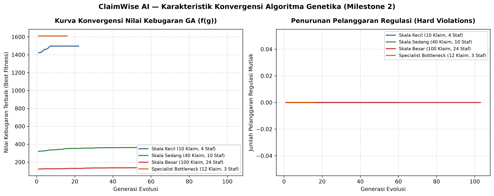

| No | NIM | Nama Mahasiswa | Peran Enterprise AI (PjBL) | Tanggung Jawab Utama Milestone 2 |
|---|---|---|---|---|
| 1 | 12S24047 | Davina Olivia Yosefanny Hutabarat | AI Architecture & Model Lead | Perancangan skema kromosom diskret integer, formulasi matematis fungsi kebugaran multi-objektif (fitness function), kalibrasi 6 sistem penalti regulasi, dan implementasi loop evolusi GA terintegrasi (solver.py). |
| 2 | 12S24011 | Pedro Simangunsong | Integration & Interface Engineer + QA, Evaluation & Ethics Lead | Pengembangan operator perbaikan heuristik (Greedy Lamarckian Repair), antarmuka eksekusi tolok ukur CLI (--benchmark), suite pengujian otomatis test_solver.py (22 unit test), dan rilis Git tag v0.2-milestone2. |
| 3 | 12S24039 | Jody Alfonso Siahaan | Data & Knowledge Engineer | Pemodelan generator data sintetis klaim realistis (generate_benchmark_instance), audit kepatuhan regulasi UU Ketenagakerjaan No. 13/2003 & POJK No. 69/2016, serta visualisasi kurva konvergensi Matplotlib. |
Pada Milestone 1 (W02), proyek ClaimWise AI berhasil memetakan proses triase klaim asuransi kesehatan ke dalam graf keputusan ruang keadaan berbasis algoritma Uniform Cost Search (UCS) dan A* Search. Pada konteks operasional sebuah perusahaan asuransi kesehatan nasional swasta (PT Asuransi Sehat Sejahtera Tbk / Inhealth), perusahaan mengelola portofolio lebih dari 45.000 klaim per bulan dengan perputaran dana klaim melampaui Rp 180 Miliar per kuartal dari 1.800 jaringan rumah sakit rekanan.
Setelah jalur verifikasi ditentukan oleh search engine (misalnya jalur Fast-Track, Standard Review, atau Fraud Investigation), operasional harian berhadapan dengan sub-masalah keputusan bisnis yang sangat krusial: Bagaimana menugaskan tumpukan berkas klaim harian kepada staf verifikator (Junior Adjuster, Senior Adjuster, Medical Advisor, dan Fraud Investigator) serta mengatur jendela shift kerja mereka (Pagi, Siang, Malam) secara efisien dan patuh regulasi?
Masalah alokasi triase klaim ini bukan sekadar persoalan pencocokan kaku (hard constraint satisfaction murni tanpa fungsi tujuan), melainkan persoalan optimasi kombinatorik multi-objektif (Multi-Objective Combinatorial Optimization) dengan trade-off bisnis nyata:
Dibandingkan algoritma kepuasan batasan murni (CSP), Algoritma Genetika (GA) dipilih karena keunggulannya dalam menangani ruang pencarian kombinatorik berskala raksasa (ruang solusi 72100 ≈ 10185 untuk 100 berkas pada 24 staf) sekaligus meramu fungsi objektif multi-kriteria:
Solusi alokasi penugasan berkas klaim direpresentasikan dalam bentuk kromosom vektor diskret integer:
Di mana N adalah total berkas klaim, setiap gen gi merepresentasikan penugasan klaim ci, ruang alel K = M × |S| dengan |S| = 3 (Pagi, Siang, Malam), dan setiap gen memetakan Slot(gi) = ( verifier(gi), shift(gi) ).
Tujuan komputasi evolusi adalah memaksimalkan fungsi kebugaran non-linier f(g):
| Simbol | Batasan Regulasi & Bisnis | Bobot (λ) | Kondisi Pemicu Pelanggaran |
|---|---|---|---|
| Vrole | Kompetensi & Lisensi Medis/Forensik | 25.000 | Klaim tindakan bedah tidak ditangani MEDICAL_ADVISOR, atau klaim anomali fraud tidak ditangani FRAUD_INVESTIGATOR. |
| Vauth | Plafon Otorisasi Finansial | 20.000 | Nominal klaim melampaui limit wewenang staf: Amount(ci) > MaxAmount(v(gi)). |
| Vconf | Konflik Kepentingan RS Rekanan | 25.000 | Staf ditugaskan memeriksa berkas dari RS yang terafiliasi secara personal: Hospital(ci) ∈ AffiliatedHospitals(v(gi)). |
| Vsla | Jendela Shift Cepat POJK No. 69/2016 | 15.000 | Klaim prioritas cepat (≤ 24 jam) ditugaskan ke shift malam saat perbankan dan supervisi offline. |
| Vsod | Pemisahan Tugas (Separation of Duties) | 20.000 | Dua berkas dalam kelompok konflik sengketa yang sama dialokasikan ke staf yang sama (anti-kolusi). |
| ΔWj, ΔKj | Beban Kerja UU Tenaga Kerja No. 13/2003 | 10.000 | Penalti kuadratik atas kelebihan poin beban harian staf (ΔWj) dan kelebihan volume berkas harian (ΔKj). |
solver.py)
Modul solver.py menerapkan arsitektur Memetic Algorithm yang mengawinkan pencarian evolusi global dengan perbaikan heuristik lokal:
Pengujian dieksekusi terhadap 5 skenario dengan 10 seeds acak independen per skenario via python solver.py --benchmark:
| No | Skenario Masalah | Klaim / Staf | Pop | Status Kelayakan | Waktu (ms) | Generasi | Pelanggaran | Biaya Staf (IDR) | σ Beban |
|---|---|---|---|---|---|---|---|---|---|
| 1 | Skala Kecil (Small Scale) | 10 / 4 | 40 | FEASIBLE (10/10) | 11,20 ± 1,59 | 22,9 ± 2,9 | 0,0 ± 0,0 | Rp 662.000 ± 200.922 | 3,29 ± 1,27 |
| 2 | Skala Sedang (Medium Scale) | 40 / 10 | 60 | FEASIBLE (10/10) | 128,12 ± 36,91 | 66,7 ± 19,9 | 0,0 ± 0,0 | Rp 2.697.000 ± 281.509 | 2,93 ± 0,78 |
| 3 | Skala Besar (Large Scale) | 100 / 24 | 100 | FEASIBLE (10/10) | 345,68 ± 196,21 | 47,7 ± 27,5 | 0,0 ± 0,0 | Rp 8.132.500 ± 862.443 | 5,02 ± 0,53 |
| 4 | Kasus Ekstrem: Over-Constrained | 25 / 2 | 50 | INFEASIBLE (0/10) | 111,52 ± 1,83 | 100,0 ± 0,0 | 82,2 ± 8,5 | Rp 1.125.000 ± 89.922 | 0,30 ± 0,24 |
| 5 | Specialist Bottleneck | 12 / 3 | 50 | FEASIBLE (10/10) | 9,28 ± 0,13 | 16,0 ± 0,0 | 0,0 ± 0,0 | Rp 450.000 ± 0 | 11,31 ± 0,00 |

pytest)Suite pengujian otomatis [`test_solver.py`](../test_solver.py) mencakup 22 fungsi pengujian unit dan kasus ekstrem. Seluruh pengujian berhasil lulus (**100% passed - 45/45 tests** bersama modul search Milestone 1):
============================= test session starts =============================
platform win32 -- Python 3.11.16, pytest-9.1.1, pluggy-1.6.0
rootdir: C:\Users\User\Documents\GitHub\ClaimWise-AI
configfile: pyproject.toml
collected 45 items
test_solver.py::test_role_compatibility_logic PASSED [ 2%]
test_solver.py::test_evaluation_detects_role_mismatch_penalty PASSED [ 4%]
test_solver.py::test_evaluation_detects_financial_excess_penalty PASSED [ 6%]
test_solver.py::test_evaluation_detects_hospital_conflict_penalty PASSED [ 8%]
test_solver.py::test_evaluation_detects_night_shift_sla_penalty PASSED [ 11%]
test_solver.py::test_evaluation_detects_conflict_group_penalty PASSED [ 13%]
test_solver.py::test_evaluation_detects_workload_capacity_penalty PASSED [ 15%]
test_solver.py::test_tournament_selection_picks_fitter_individual PASSED [ 17%]
test_solver.py::test_elitism_preserves_best_individuals PASSED [ 20%]
test_solver.py::test_ga_finds_zero_violation_solution PASSED [ 22%]
test_solver.py::test_ga_workload_capacity_compliance PASSED [ 24%]
test_solver.py::test_ga_separation_of_duties_compliance PASSED [ 26%]
test_solver.py::test_edge_case_zero_claims PASSED [ 28%]
test_solver.py::test_edge_case_single_claim_boundary PASSED [ 31%]
test_solver.py::test_edge_case_over_constrained_graceful_handling PASSED [ 33%]
test_solver.py::test_edge_case_specialist_bottleneck PASSED [ 35%]
test_solver.py::test_edge_case_clique_of_conflicts PASSED [ 37%]
test_solver.py::test_edge_case_extreme_claim_amount_exceeds_all PASSED [ 40%]
test_solver.py::test_seed_reproducibility PASSED [ 42%]
test_solver.py::test_cost_breakdown_calculation PASSED [ 44%]
test_solver.py::test_repair_individual_remedies_infeasible_chromosome PASSED [ 46%]
test_solver.py::test_large_scale_100_claims_achieves_zero_violations PASSED [ 48%]
test_ucs_search.py::test_low_risk_classification PASSED [ 51%]
test_ucs_search.py::test_high_risk_classification PASSED [ 53%]
... (21 unit test Milestone 1 lainnya) ...
test_ucs_search.py::test_negative_edge_weight_raises_error PASSED [100%]
============================= 45 passed in 0.36s ==============================Repositori GitHub ClaimWise AI telah terstandarisasi dengan Astral uv dan diberi penanda rilis Git tag resmi v0.2-milestone2:
ClaimWise-AI/
├── .gitignore # Konfigurasi pengabaian virtualenv, cache, dan data temporer
├── LICENSE # Lisensi terbuka MIT
├── pyproject.toml # Standar konfigurasi proyek Astral uv (v0.2.0)
├── requirements.txt # Dependensi cadangan kompatibilitas pip
├── ucs_search.py # Modul pencarian rute triase baseline (Milestone 1)
├── test_ucs_search.py # 23 Unit test pengujian pencarian rute (Milestone 1)
├── solver.py # Modul solver optimasi GA multi-objektif (Milestone 2)
├── test_solver.py # 22 Unit test pengujian operator GA & edge cases (Milestone 2)
├── docs/
│ ├── Laporan_Tugas01_ClaimWise.md # Laporan resmi Tugas 1 (Milestone 1 - W02)
│ ├── Laporan_Tugas01_ClaimWise.html
│ ├── Grup08-Tugas02.md # Laporan resmi Tugas 2 GA (Milestone 2 - W04)
│ ├── Grup08-Tugas02.html # Versi cetak web laporan resmi Milestone 2
│ ├── Grup08-Tugas02.pdf # Dokumen serahan final PDF ECourse Del
│ └── convergence_curve.png # Grafik kurva konvergensi resolusi tinggi (Matplotlib)
└── README.md # Dokumentasi repositori terpadu# 1. Kloning repositori resmi GitHub
git clone https://github.com/DavinaHutabarat/ClaimWise-AI.git
cd ClaimWise-AI
# 2. Checkout tag rilis resmi Milestone 2
git checkout v0.2-milestone2
# 3. Sinkronisasi dependensi virtual environment
uv sync
# 4. Menjalankan demonstrasi alokasi klaim interaktif GA
uv run python solver.py
# 5. Menjalankan benchmark analisis sensitivitas multi-seed (10 seeds) & pembangkitan kurva
uv run python solver.py --benchmark
# 6. Menjalankan seluruh pengujian otomatis pytest (45 unit test)
uv run pytest -v